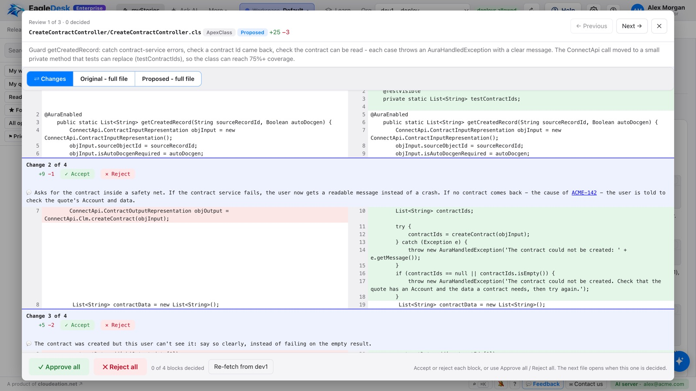

The AI workbench for everything between "story assigned" and "ready to promote": find the root cause, review the fix block by block, deploy safely and prove it with tests in every sandbox – on top of the pipeline you already use.
Or download for Mac & Windows – 7-day free trial, no credit card

Personal is for one developer or consultant, on their own computer. Enterprise is for the whole project team, running in your company's own AWS account. Both find the root cause, propose the fix, review it block by block and prove it in every org.
For one Salesforce developer or consultant
For Salesforce project teams and their security review
The AI reads the org read-only and explains the root cause in plain English.
A proposed fix with a note on every block. Accept or reject each one.
Validate, deploy with a backup, run tests in each org and collect the evidence.
Ready to promote – your pipeline moves it on, EagleDesk tracks where it is.
Import the story from Jira, Azure DevOps or Copado. The AI reads the org – code, flows, fields and data – read-only, and tells you exactly where and why it fails.
Every change comes with a plain-English note on what it does, next to the org's own version. Accept or reject each block – nothing is deployed without you.
Validate first with the tests you choose. Deploy with a backup of what was there, watch every step live, then run tests in each org and hand QA the evidence.
EagleDesk Enterprise runs in your own AWS account with Amazon Bedrock. Everyone signs in with single sign-on and uses their own Salesforce login.
"I've been handed a story in code I didn't write."
From story assigned to Ready to promote in one place.
"I need to know what's changing – and where it is."
Fewer surprises between dev, QA, UAT and production.
"We work for several clients at once."
Every client's work separate, and every fix proven.
Copado, Gearset and DevOps Center are good at promoting changes. But the hard part of a story happens before that: working out what the old code does, finding the real cause, checking the fix, and proving it works in each org. That's the part EagleDesk is for.
Tests run in each org with evidence: passed, failed and not run, shown org by org along your promotion path. When everything has passed, the story says Ready to promote.
Keep Copado, Gearset, DevOps Center or change sets. EagleDesk works alongside them – nobody has to switch tools or approve a new platform.
It runs on your computer with your own AI subscription and your own Salesforce logins. Client code and data never pass through our servers.
No more jumping between the story, Setup, VS Code, the CLI, a spreadsheet of sandboxes and a Word template.
The heart of EagleDesk: every change comes with a plain-English note on what it does, next to the org's own version. Accept or reject each block, approve file by file, or read the whole original or proposed file with the changes highlighted – nothing reaches an org without you.
The AI reads the org (read-only) – code, flows, fields, data – and explains what is wrong and why, before anything changes.
Each story's Overview leads with the problem, the root cause and the proposed fix, then the real state: files reviewed, alerts, validation, tests. Diagnosis, evidence, solution and the code walk-through are one click away.
Ask about your org without leaving what you're doing – it knows the class, Flow, object or query on screen. Keep it docked, expand it or float it; answers come with highlighted code and query results.
Test cases written for the change and run by the AI – in the back end with data rolled back, or in the browser with screenshots – plus your Apex test classes.
One click checks every org on your path: which has this fix, which has an older version, which has someone else's later change.
Code deployed and every test passed? The story says so – and a filter shows every story waiting to move to the next org.
A Word evidence document with steps, results and screenshots, ready to attach to the story. Story updates drafted from the work.
Steps only you can do become a checklist with a click-by-click guide and an "Open in Salesforce" link to the exact page.
Validate first or deploy straight away, with the tests you choose and a backup of what was there – to the orgs you allow.
Org Browser with an editor and coverage, SOQL, Org Compare, Data Loader, Seed Data, debug logs and Apex tests.
Courses the AI builds for your level in each topic – administration, Flow, Apex and more – with lessons, exercises and points, in the way you like to learn.
Consultants work for several clients at once. Each workspace has its own orgs, stories, AI conversations, notes, promotion path and work tracking connection.
+ New workspace – as many as you need with Pro.
Stories, files and evidence stay on your machine. Logins use the Salesforce CLI; tokens live in your system's password store.
Every org starts read-only. Deploy and data rights are given per org, with a typed confirmation.
Production orgs can only be read – unless you deliberately turn the lock off.
The AI asks before any change to an org, test data is rolled back, and every deployment and data action is logged with a backup.
Bring your developers, admins, release managers and IT. Our Salesforce and AWS specialists walk your team through EagleDesk on a real story – from root cause to tested, deployed fix.
Personal: try everything for 7 days – no credit card. The trial starts the first time you use the AI or deploy. Enterprise: per user, through your AWS bill.
or $149 / year – about two months free
or $490 / user / year · on your AWS bill
| Free | Pro Personal | Enterprise | |
|---|---|---|---|
| Price | $0 | $14.99 / month or $149 / year | $49 / user / month or $490 / user / year |
| Runs on | Your Mac or Windows PC | Your Mac or Windows PC | Your own AWS account |
| Who uses it | One person | One person | The whole team – one seat per user |
| Org Browser, SOQL, Org Compare, debug logs | ✓ | ✓ | ✓ |
| AI root cause, fixes and Ask AI | – | ✓ your own AI subscription | ✓ Amazon Bedrock in your account |
| Block-by-block review, validate & deploy with backups | – | ✓ | ✓ |
| AI-run tests and QA / UAT evidence | – | ✓ | ✓ |
| Workspaces | 1 | Unlimited | ✓ |
| Sign-in | On your computer | On your computer | Single sign-on (OpenID Connect) + each person's own Salesforce login |
| Users, roles, permissions, audit log | – | – | ✓ |
| Where your data lives | Your computer | Your computer | Your AWS account |
| Billing | – | Monthly or yearly, cancel anytime | On your AWS bill, 1 or 12 months |
Enterprise: AWS infrastructure and Amazon Bedrock usage are billed by AWS to your account (about $3 a day at the smallest sizes, plus AI use). Questions or a private offer? Talk to us. Rather we hosted it for you? Join the Cloud for teams waitlist.
Personal: when the trial ends without a subscription, EagleDesk becomes read-only – you can still look at everything and browse your orgs, and all your work is kept.
We're building a hosted EagleDesk for project teams: shared stories, roles, reviews and test evidence, each team in its own separate environment. Join the waitlist to hear first and help shape it.
The workbench is the same. Personal runs on one person's Mac or Windows PC with their own AI subscription. Enterprise runs in your company's own AWS account for the whole team: AI through Amazon Bedrock, single sign-on, each person's own Salesforce login, users and roles, and a shared database of stories, reviews and test evidence.
Subscribe on AWS Marketplace for the number of users you need, monthly or yearly – it's billed on your AWS bill. Then deploy the CloudFormation template in your account (about 15 minutes) and sign in as the first administrator. The usage instructions on the listing walk through each step, and we help with the setup.
No. Enterprise runs entirely in your AWS account – the server, database, files and backups – and the AI runs through Amazon Bedrock in your account and Region. Your code, org data and conversations never leave it; EagleDesk only checks your AWS Marketplace contract through AWS License Manager.
No. EagleDesk sits next to your pipeline. It imports stories from Copado, Jira or Azure DevOps, and your promotion path can use Copado, Gearset, DevOps Center, change sets or your own CI – EagleDesk tracks where the fix is and how its tests went in each org.
You can – EagleDesk uses one too. What it adds is the finished workflow around it: a plain-English note for every change block, accept or reject block by block, approval before anything touches an org, tests that roll their data back, evidence QA can sign off, and a view of every org on your promotion path. Building that yourself takes far longer than a story.
No. The AI reads the org read-only. Code changes are proposed for your review and only deployed when you approve and start the deployment. Any other change the AI wants to make in an org waits for your approval.
Personal: on your computer. EagleDesk runs locally; stories, attachments, test evidence and backups are stored in your own data folder. Salesforce logins use the Salesforce CLI on your machine, and Jira / Azure DevOps tokens are kept in your system's secure password store. Enterprise: in your own AWS account.
Personal: a Mac or Windows PC, the Salesforce CLI, and an AI assistant subscription that EagleDesk connects to on your computer. The setup guide inside the app checks each one for you. Enterprise: an AWS account with Amazon Bedrock access in your Region.
A workspace keeps one client or project apart: its orgs, stories, AI conversations, notes, promotion path and work tracking connection. Pro includes unlimited workspaces.
If you subscribe, nothing changes. If you don't, EagleDesk becomes read-only: you can still look at your stories, history and evidence and browse your orgs, but nothing can be changed and the AI switches off. Everything is kept – subscribe any time to switch it all back on.
Yes: $149 a year instead of $14.99 a month – about two months free. Both plans include unlimited workspaces.
Yes. The subscription is monthly (or yearly if you choose). Your data stays on your computer either way.